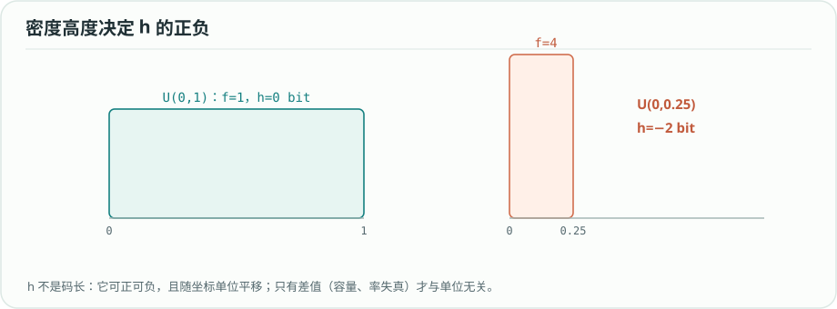
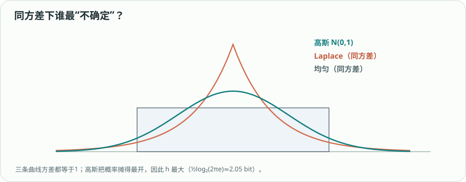
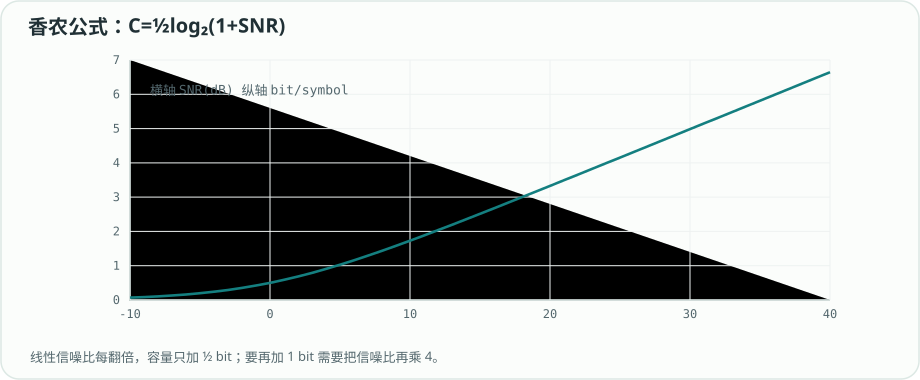
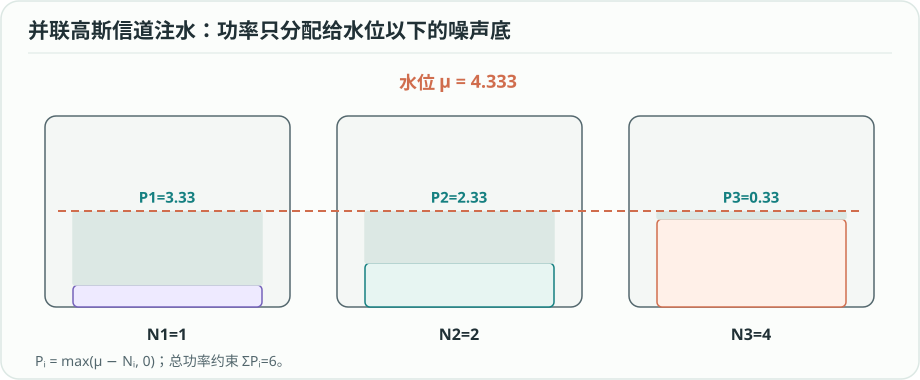

把熵从求和推向积分，会发生什么？
现实信号大多是连续的：电压、声压、像素亮度。它们不能在严格意义上“无损压缩”，因为一个实数需要无限多位才能精确表示。但我们仍然需要度量“连续随机变量有多不确定”。把熵定义里的求和换成积分，就得到微分熵。它不再是一个可操作的编码长度，却能推出连续信道的容量。
微分熵的定义与“可以为负”
设连续随机变量 X 的密度为 f(x)，则
形式上和离散熵一样，但性质差别很大。离散熵永远非负，因为它是对 −p·log₂p≥0 求和；而概率密度可以大于 1，于是 −f·log₂f 可能为负。取 X~U(0, ¼)，其密度 f(x)=4，于是

平移不变、伸缩有界与链式法则
微分熵保持了一些熟悉的结构：
- 平移不变：h(X+c)=h(X)。把整条分布平移不改变不确定性。
- 伸缩：h(aX)=h(X)+log₂|a|。把单位改成更小的（数值放大）会增加 h，因为描述同一个物理量需要更细的标尺。
- 联合与条件：h(X,Y)=−∬f(x,y)log₂f(x,y)dxdy，h(X|Y)=h(X,Y)−h(Y)。
- 链式法则：h(X₁,…,Xₙ)=Σᵢ h(Xᵢ | X₁,…,Xᵢ₋₁)。
注意：即使 X 离散化后看似“更精确”，连续量的 h 也可以是负数；这三条性质描述的都是相对尺度，而不是绝对的编码长度。
最大熵分布：方差给定时高斯最大
在给定约束下使微分熵最大的分布，就是“最没有偏见”的分布。常见结论：
| 约束 | 最大熵分布 | h(X) |
|---|---|---|
| 支撑集 [a,b] | 均匀 U(a,b) | log₂(b−a) |
| 均值 μ（支撑集 [0,∞)） | 指数分布，均值 μ | log₂(e·μ) |
| 方差 σ² | 高斯 N(·,σ²) | ½log₂(2πeσ²) |
| E[|X−μ|]=β | Laplace | log₂(2eβ) |
最有用的是第三行：给定方差，高斯分布的微分熵最大。粗略推导：在 ∫f=1 与 ∫x²f=σ² 两个约束下用拉格朗日乘子最大化 −∫f log f，得到的 f 必为高斯形式。这解释了为什么高斯噪声总被当作“最坏情况”：它在相同功率下能施加最大的不确定性。

香农公式：C=½log₂(1+P/σ²)
加性高斯白噪声（AWGN）信道：Y=X+N，N~N(0,σ²) 独立于 X，发送功率约束 E[X²]≤P。容量是互信息的上确界：
推导只用两个事实：I(X;Y)=h(Y)−h(Y|X)=h(Y)−h(N)，噪声熵 h(N)=½log₂(2πeσ²) 与 X 的分布无关；又 Var(Y)=P+σ²，而固定方差下高斯最大熵，所以取 X~N(0,P) 令 Y 也高斯时 I 最大。代入两式相减即得上式。

每复/实符号容量 C=½log₂(1+SNR)；与信道带宽相乘才是 bit/s，交互只算单符号容量。
并联高斯信道与注水法
把频带分成 k 个子载波（OFDM），每个子载波是方差 σᵢ² 的独立高斯信道，总功率 P 要分配。最优分配是注水法：选水位 μ 使
名字来自一个水壶比喻：把噪声方差当作底部高低不平的地形，倒水后水面平齐到高度 μ，水深 μ−σᵢ² 就是分给该信道的功率；噪声方差高于 μ 的子载波完全不用。它与第 19 章的反向注水形状对偶。

把容量与注水写成可测试代码
本仓库的 Python 样例实现 AWGN 每符号容量与并行信道的注水分配，并用固定点断言。
from examples.foundations import awgn_capacity, water_filling
assert round(awgn_capacity(1.0), 6) == 0.5 # SNR=1 ⇒ ½log₂2
assert round(awgn_capacity(3.0), 6) == 1.0 # SNR=3 ⇒ ½log₂4
mu, power = water_filling([0.1, 0.5, 2.0], 2.0)
assert round(sum(power), 6) == 2.0
assert power[2] == 0.0 # 噪声过高，不分配样本代码中常见的高斯随机量（如 numpy 矩阵）只是为了演示，真正的断言只依赖闭式公式与确定性分配，与随机种子无关。
来源与延伸阅读
- C. E. Shannon (1948), A Mathematical Theory of Communication：连续信源与噪声信道容量的原始论文。
- MIT 6.441 (2016) Differential Entropy and Gaussian Channels：最大熵与 AWGN 容量的课程推导。
- Cover & Thomas, Elements of Information Theory：微分熵性质、最大熵分布与注水法。